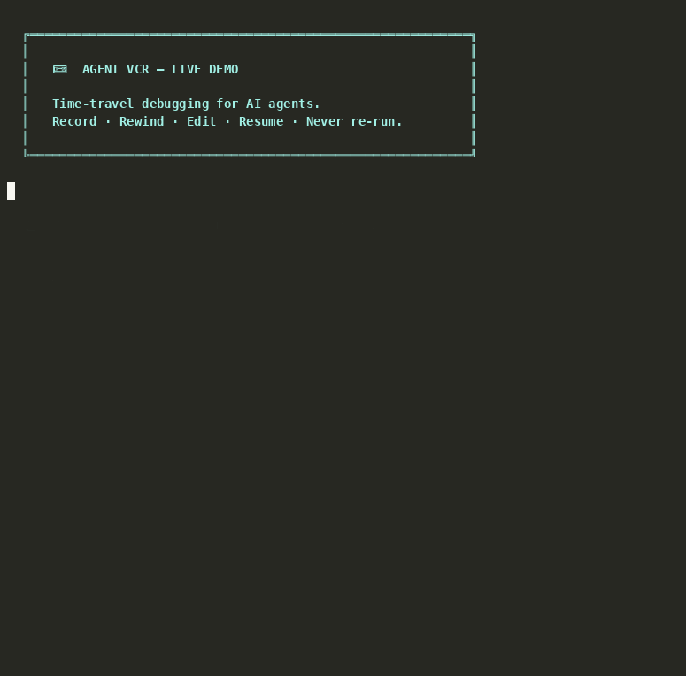

Your agent failed on step 8 of 10. Observability tools show you what happened.
Agent VCR rolls back the filesystem, replays for free, and resumes from step 8.

Real terminal output from python examples/showcase_demo.py — watch full demo →
When your LangGraph or CrewAI agent fails on step 8 out of 10, existing tools only tell you what went wrong. To fix it, you re-run all 10 steps from scratch.
Every logic error costs minutes of wall time and dollars in wasted LLM tokens. At scale, this kills iteration speed entirely.
Agent VCR records your agent's complete state at every step into a local JSONL file. When something breaks, you jump straight to the failing frame.
Edit the state — fix a bad prompt, inject corrected context, patch a tool output — then resume execution forward from that exact point.
From zero to time-travel in under a minute.
pip install ai-agent-vcrfrom agent_vcr import VCRRecorder
recorder = VCRRecorder()
recorder.start_session("debug_run")
# Your existing agent code — unchanged
result = my_agent.run(query)
recorder.save() # → .vcr/debug_run.vcrfrom agent_vcr import VCRPlayer
player = VCRPlayer.load(".vcr/debug_run.vcr")
# Jump to the failing step
state = player.goto_frame(7)
print(state) # Inspect full state
# Fix the bad state
state["prompt"] = "Corrected prompt"
# Resume from step 7 forward
player.resume(agent_callable, from_frame=7)Built for the reality of multi-step agentic systems.
Jump to any frame in a session instantly. Full input/output state snapshot at every node.
Mutate the state at any frame — fix a prompt, patch tool output, inject context — then resume.
Fork from any frame to create parallel runs. Compare how different fixes change downstream behavior.
Stream agent execution in real-time via the built-in FastAPI server. Watch every step as it happens.
Sessions stored as plain JSONL. Human-readable, git-diffable, append-only, parseable line-by-line.
P99 recording latency under 5ms. Benchmarked continuously in CI. Safe for production use.
Full AsyncVCRRecorder and AsyncVCRPlayer. Zero blocking I/O, built for modern asyncio agents.
Ship with a Textual TUI debugger. Run vcr in your terminal to browse sessions
interactively.
Native integrations for LangGraph and CrewAI. Decorator API for raw Python — no framework required.
BEGIN, SAVEPOINT, ROLLBACK, COMMIT — backed by git. Rollback physically reverts files on disk, not just in-memory state.
Save a successful run as a ghost. Next time you hit the same task — replay it instantly. Zero LLM calls, zero tokens, zero cost.
Real-time code quality analysis. Catches duplicate functions, complexity spikes, and file bloat before the agent moves on. Learn more →
Drop into any framework in one line.
from langgraph.graph import StateGraph
from agent_vcr import VCRRecorder
from agent_vcr.integrations.langgraph import VCRLangGraph
graph = StateGraph()
graph.add_node("planner", planner_node)
graph.add_node("coder", coder_node)
# Add VCR in one line
recorder = VCRRecorder()
graph = VCRLangGraph(recorder).wrap_graph(graph)
result = graph.invoke({"query": "Build a todo app"})
recorder.save()from openhands_sentinel import Sentinel
from agent_vcr import VCRRecorder
recorder = VCRRecorder()
sentinel = Sentinel(recorder=recorder)
# 3 lines — auto-intercepts every file write
sentinel.attach(runtime.event_stream)
# Or scan any directory standalone
# $ sentinel scan ./my-project
# Every check recorded as a VCR frame
# Full audit trail in .vcr/from crewai import Crew
from agent_vcr import VCRRecorder
from agent_vcr.integrations.crewai import VCRCrewAI
recorder = VCRRecorder()
recorder.start_session("crew_run")
crew = Crew(agents=[researcher, writer], tasks=[...])
# Wrap and run — recording is automatic
vcr_crew = VCRCrewAI(recorder)
result = vcr_crew.kickoff(crew)
recorder.save()from agent_vcr import VCRRecorder
from agent_vcr.integrations.langgraph import vcr_record
recorder = VCRRecorder()
# Decorate any function
@vcr_record(recorder, node_name="my_step")
def my_step(data: dict) -> dict:
return process(data)
# Each call is automatically recorded
result = my_step({"key": "value"})from agent_vcr import AsyncVCRRecorder, AsyncVCRPlayer
recorder = AsyncVCRRecorder()
await recorder.start_session("async_run")
# Fully non-blocking recording
await recorder.record_step(
node_name="fetch_context",
input_state=query_state,
output_state=result_state,
)
path = await recorder.save()
# Async time-travel
player = await AsyncVCRPlayer.load(path)
state = await player.goto_frame(3)Agent VCR is the only tool that lets you change what happened.
| Feature | Agent VCR | LangSmith | LangFuse | Arize Phoenix |
|---|---|---|---|---|
| Record execution traces | ✓ | ✓ | ✓ | ✓ |
| Time-travel to any step | ✓ | ✗ | ✗ | ✗ |
| Edit state & resume | ✓ | ✗ | ✗ | ✗ |
| Fork from any frame | ✓ | ✗ | ✗ | ✗ |
| ACID transactions | ✓ | ✗ | ✗ | ✗ |
| 👻 Ghost Replay | ✓ | ✗ | ✗ | ✗ |
| Real-time code guardian | ✓ Sentinel | ✗ | ✗ | ✗ |
| Self-hosted / local-first | ✓ | Cloud only | ✓ | ✓ |
| Git-friendly format | ✓ JSONL | ✗ | ✗ | ✗ |
| Setup lines of code | 3 | ~15 | ~10 | ~10 |
Minimal, predictable interfaces.
# Start a recording session
recorder.start_session(
session_id: str = None,
metadata: dict = None,
tags: list[str] = None,
) -> Session
# Record one agent step
recorder.record_step(
node_name: str,
input_state: dict,
output_state: dict,
metadata: FrameMetadata = None,
) -> Frame
# Convenience recorders
recorder.record_llm_call(...)
recorder.record_tool_call(...)
recorder.record_error(...)
# Save & fork
recorder.save() -> Path
recorder.fork(from_frame: int) -> VCRRecorder# Load a saved session
player = VCRPlayer.load(filepath: str)
# Time-travel
player.goto_frame(index: int) -> dict
player.get_frame(index: int) -> Frame
# Inspect
player.list_nodes() -> list[str]
player.get_errors() -> list[Frame]
player.compare_frames(a: int, b: int) -> dict
# Resume execution
player.resume(
agent_callable: Callable,
config: ResumeConfig,
) -> str
# Export
player.export_state(frame_index: int) -> dict# Configure how replay works
ResumeConfig(
from_frame: int,
# Optional: override state before resume
state_overrides: dict = {},
# FORK: new session from this point
# REPLAY: re-run same inputs
# MOCK: use injected mock values
mode: ResumeMode = FORK,
# Skip specific nodes
skip_nodes: list[str] = [],
# Inject mocks for tool calls
inject_mocks: dict = {},
)Databases solved partial failure 40 years ago. Agents have the same problem.
Your agent hallucinated bad code on step 5. You roll back the state object, but the files are still on disk. Half-written modules, bad imports, broken configs — all still there.
Each agent session runs on an isolated git branch. SAVEPOINT checkpoints both state and filesystem together. ROLLBACK runs git reset --hard — files are gone from disk, not just hidden.
from agent_vcr import VCRRecorder
from agent_vcr.integrations.openhands import ACIDWorkspace
recorder = VCRRecorder()
acid = ACIDWorkspace("/my/workspace", recorder=recorder)
acid.begin(session_id="task-001")
acid.savepoint(state, node_name="coder")
acid.rollback(to_frame_index=3) # files physically reverted
acid.commit() # clean mergeWhen your agent succeeds, save the run as a ghost. Next time, it replays instantly — zero tokens, zero dollars, 1ms.
from agent_vcr.golden_cache import GoldenRunCache
cache = GoldenRunCache()
# After a successful run — save as a ghost
cache.save_golden_run("Build a REST API", recorder)
# Next time — ghost replays instantly, $0.00
outputs, ledger = cache.replay("Build a REST API")
print(ledger)
# CostLedger(saved=100% | $0.0123 | 4,100 tokens | 2,349ms)Tasks are SHA-256 hashed for reliable lookups. Same task description always maps to the same ghost run — no ambiguity.
Tracks original tokens vs replay: dollars saved, milliseconds saved, percentage reduction. Shows exactly what Ghost Replay saved you.
Call cache.invalidate(task) when the underlying logic changes and the ghost is no longer valid. Simple and explicit.
Real-time code quality guardian for AI agents. Watches every file write, catches violations instantly, warns the agent to self-correct.
AI agents duplicate functions across files, create 200-line monolithic handlers, and ignore existing abstractions. The codebase degrades with every task.
Sentinel hooks into the OpenHands EventStream and runs instant AST analysis on every file write. When violations are detected, it warns the agent — which self-corrects in the same session.
STEP 1: Agent writes auth/utils.py
🛡️ SENTINEL: auth/utils.py — CLEAN ✓
STEP 2: Agent writes handlers.py (massive monolithic function)
🛡️ SENTINEL: VIOLATIONS DETECTED!
CRITICAL hash_password() already exists in auth/utils.py:8
CRITICAL handle_auth_request() is 109 lines (max 40)
CRITICAL Cyclomatic complexity 32 (max 8)
WARNING 9 parameters (max 5)
→ Sentinel warns agent. Agent self-corrects.
STEP 3: Agent rewrites handlers.py
🛡️ SENTINEL: handlers.py — CLEAN ✓ All issues resolved!
📼 Audit trail saved to .vcr/sentinel-demo.vcrUses only Python's built-in ast module. No API keys, no cloud calls, no external services. Your code never leaves your machine.
Unlike standard linters, Sentinel tracks function definitions across the entire session. It detects duplicates that span multiple files.
Detects and warns about oversized VCR frames (the OpenHands issue #7402 pattern) before they pollute the recording.
LangGraph's checkpointer persists graph state at every super-step. If you only need state inspection within LangGraph, it's a solid built-in. But state checkpoints aren't the whole picture.
| LangGraph Checkpointer | Agent VCR | |
|---|---|---|
| Checkpoint in-memory state | ✅ | ✅ |
Rollback files on disk (git reset --hard) |
❌ | ✅ |
| Ghost Replay (zero tokens, zero cost) | ❌ | ✅ |
| Sentinel (real-time AST quality guard) | ❌ | ✅ |
| Works with CrewAI, raw Python, any framework | ❌ LangGraph only | ✅ |
| JSONL format (git-diffable, streamable) | ❌ Opaque | ✅ |
| Session forking with parallel comparison | ❌ | ✅ |
When your agent writes files to disk and then fails, the checkpointer rolls back the state object but the files stay. Agent VCR's ACID workspace runs git reset --hard and physically deletes them. That's the difference between "debugger" and "undo."
Install Agent VCR and start debugging from the exact frame that broke.
pip install ai-agent-vcrMIT License · No signup required · Works offline